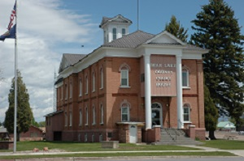

Fish Haven, Idaho
Weather Summary
Upcoming Events
5 Day Forecast
Bear Lake Courthouse
The Bear Lake County Courthouse was, at one time, the oldest building actively holding trials in Idaho. Now, with a new courthouse in operation, it is probably the newest courthouse in the Gem State.
The old Paris courthouse was built from 1884 to 1885, then completely remodeled in 1908, and again in 1936.
Rex Payne, the county commissioner who oversaw the construction, said it’s not totally complete. The landscaping and some interior and exterior work needs to be completed.
“The coronavirus held us up a little,” he said. “We haven’t been able to get the windows for the front of the clerk’s office.”
However, the county has moved in and started using the building. They scheduled an open house to take place on Monday, July 13 at 2 p.m. for the $5.8 million building.
“We had to get a judicial confirmation to build the courthouse,” Payne said. “The building failed two Americans with Disabilities Act inspections and we couldn’t get the votes we needed to build it.”
The judicial confirmation was the only option.
Wayne Davidson, building inspector for the county, had the road and bridge crew help with some excavation and other projects as needed.
“We are really happy with the way it all turned out with Big D Construction out of Rexburg doing the construction,” he said. “They saved us a lot of money and Myers and Anderson, the architects out of Pocatello, also did a nice job.”
Paris is the county seat of Bear Lake County and is located 10 miles southwest of Montpelier on Hwy 89, roughly 6,000 feet above sea level. The historic town was founded in 1863, making it one of the oldest communities in the Gem State.
The county chose a workable, conservative design. They weren’t after bells and whistles. The new building is located just north of where the current building is, said County Clerk Cindy Garner.
The new 15,000 square-foot courthouse is ADA compliant and on a single floor. Besides the courtroom, there is a meeting room for the commissioners and offices for the clerk, treasurer, assessor, prosecuting attorney, driver’s license and sheriff’s office.
There was no jail needed, because the county contracts with Caribou County to house prisoners.
“We had a study done to find out what the price of remodeling the old courthouse would be compared to building a new one. The difference was $70,000,” Garner said. “We tried three times to get a $3 million bond passed to fund the new building, and finally had to resort to judicial confirmation.”
Now that the building is finished, the fate of the old courthouse has not been announced yet.
Source: Cache Valley Daily